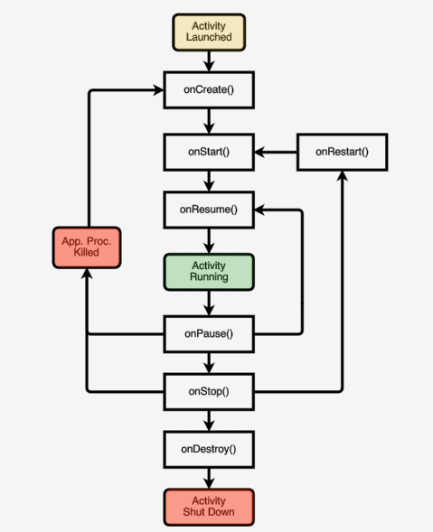

Android Development
Table of Contents
1 Application Components
1.1 Activity
Provides a visual interface for user interaction.
Each activity supports one thing. E.g: viewing an email message
Application often comprise several activities.
1.1.1 Navigation Through Activities
- Tasks
- A task is a set of related activities
- And these related activities don't have to be part of the same application
- The Task Backstack
- Backstack serves for back key
- When an activity is launched, it goes on top of the backstack
- When the activity is destoried, it is popped off the backstack
- startActivityForResult()
Invoke a callback method when the called activity finishes to return a result.
Started activity can call setResult(int resultCode, Intent data). Intent data is optional.
Result Code: RESULT_CANCELED, RESULT_OK, RESULT_FIRST_USER, also custom resultcodes.
1.1.2 LifeCycle

- States Description
- Resumed/Running: Visible, User interacting
- Paused: Visible, User not interacting, Can be terminated
- Stopped: Not visible, Can be terminated
- onCreate()
- Call super.onCreate()
- Set the activity's content view
- Retain reference to UI views as necessary
- Configure views as necessary
- onRestart()
Special processing needed only after having been stopped.
- onStart()
- Start when visible-only behaviors
- Loading persistent application state
- onResume()
Start foreground-only behaviors
- onPause()
- Shutdown foreground-only behaviors
- Save persistent state
- onStop()
Cache state
Note: May not be called if android kills your apps
- onDestory()
Release activity resources
Note: May not be called if android kills your apps
- Configuration Changes
On configuration changes(keyboard, orientation),
android usually kills the current activity and
then restarts it.
If restarting is slow, we can:
- Retain an Object
Hard to recompute data can be cached.
Override onRetainNonConfigurationInstance() to build & return such an object.
This callback function will be called between onStop() and onDestroy().
Call getLastNonConfigurationInstance() during onCreate()
Note:These methods have been deprecated in
favor of methods in the Fragment class
onSaveInstanceState()
onRestoreInstanceState()
- Manually Reconfiguration
Can prevent system from restarting.
- Declare the configuration changes your activity handles in AndoridManifest.xml
<activity android:name=".MyActivity" android:configChanges= "orientation|screensize|keyboardHidden" …>
- Override onConfigurationChanged()
- Declare the configuration changes your activity handles in AndoridManifest.xml
- Retain an Object
1.2 Service
1.3 BroadcastReceiver
1.4 Content Provider
2 Major Class
2.1 Intent
A data structure that represents
- An operation to be performed
- An event that has occurred1
2.1.1 Operation to Be Performed
Intents provide a flexible language
for specifying operation to be performed
E.g: pick a contact, take a photo, dial a phone etc.
2.1.2 Event
2.1.3 Fields
- Action
String representing desired operation.
Examples:
ACTION_DIAL dial a number ACTION_EDIT display data to edit ACTION_SYNC sychronize device data with server ACTION_MAIN start as initial activity of app Can be set by constructor or setAction() method.
- Data
Data associated with the intent.
Formatted as a uniform resource identifier(URI)
intent.setData(Uri.parse("tel:+1555555555"));
- Category
Additional information about the components
that can handle the intent.
Example:
- CATEGORY_BROWSABLE
can be invoke by a browser to display data ref's by a URI
- CATEGORY_LAUNCHER
can be the initial activity of a task &
is listed in top-level app launcher
- CATEGORY_BROWSABLE
- Type
Specifies the mime type of the intent data
Example:
image/*, image/png, image/jpg
text/plain, text/html
If unspecified, Android will infer the type.
Intent.setType(String type);
Intent.setDataAndType(Uri data, String type);
- Component
The component that should receive this intent.
Use this when there's exactly one component that should
receive the intent.
Intent newInt = Intent(Context packageContext, Class<?> cls);
or
setComponent(), setClass(), setClassName()
- Extras
Add information associated with Intent
Treated as a map (key-value pairs)
Intent newInt = new Intent(Intent.ACTION_SEND); newInt.putExtra(android.content.Intent.EXTRA_EMAIL, new String[]{ "aporter@cs.umd.edu", "ceo@microsoft.com", "potus@whitehouse.gov","mozart@musician.org" } );
putExtra(String name, String value); putExtra(String name, float[] value);
- Flags
Specify how intent should be handled
- FLAG_ACTIVITY_NO_HISTORY
Don't put this activity in the history stack.
- FLAG_DEBUG_LOG_RESOLUTION
Print extra logging information when this
intent is processed.
intent.setFlags(Intent.FLAG_ACTIVITY_NO_HISTORY);
- FLAG_ACTIVITY_NO_HISTORY
3 SDK Manager Proxy
mirrors.neusoft.edu.cn 80
Footnotes:
Will be covered in broadcast receiver